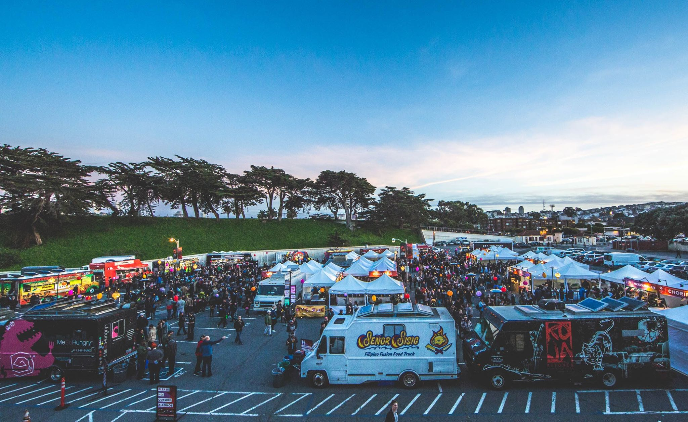

3 Event Foresight: Predict Attendance for Non-Ticketed Events
3.0.0.1 predictive analytics, image processing, events, event planning

3.1 Breaking the Vicious Cycle
Off the Grid is a food truck events company in the Bay Area that hosts 70 weekly events in 26 cities. As the company opens in new locations, a recurring issue at their grand opening events is tremendous event attendance met with insufficient food supply. With every food truck that sells out, there’s a loss of revenue and a dire impact on customer retention as wait time increases and customer satisfaction diminishes. Thus, the company needs a better way to forecast attendance in order to better prepare their food truck vendors for the potential turnout. A step towards this goal is figuring out a way to accurately predict attendance for their events, which are non-ticketed, outdoors and temporary.
3.2 Event Foresight
As a temporary event, Off the Grid does not have the advantage of constant physical presence, and therefore constant promotion, as brick-and-mortar locations. Furthermore, with no actual ticket sales prior to an event, the company can only depend on Facebook RSVPs to gauge attendance with the understanding that RSVP are generally correlated with attendance. However, for more precise forecasts that can improve event-planning and decision making, the company needs a model that incorporates the many variables that affect event attendance.
Introducing Event Foresight, a software solution that offers insight to the success of an event based on digital engagement factors and environmental variables. Its underlying algorithm is a regression model that takes into account factors including social media engagement, weather, location, vendor klout (online social influence based on followers) that have the potential to affect event turnouts and sales. Event Foresight integrates with various services, allowing easy tracking around related factors such as engagement around tagged social media event posts and forecasted weather conditions in the event’s location. Furthermore, users can upload a file of social media accounts (i.e. Facebook, Twitter or Instagram) of vendors they commonly partner with for quick selection and assessment of potential klout around the event. With this prediction model, Off the Grid can generate an attendance forecast that they can use in key decision-making on the appropriate number of food trucks to schedule or the production level food trucks should be ready to serve at in order to reduce potential loss of revenue.
3.3 Potential for More
The ability to forecast event attendance accurately can help Off the Grid from losing thousands of dollars in revenue per event, and earn the company even more through customer retention. Furthermore, Event Foresight could be applicable in many other fields, as it may also help law enforcement in forecasting crowd sizes to better estimate the number of security personnel required for an outdoor event.